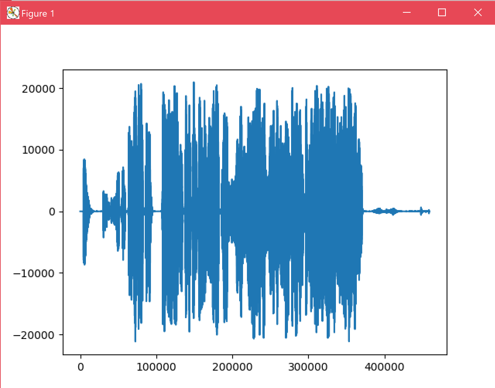
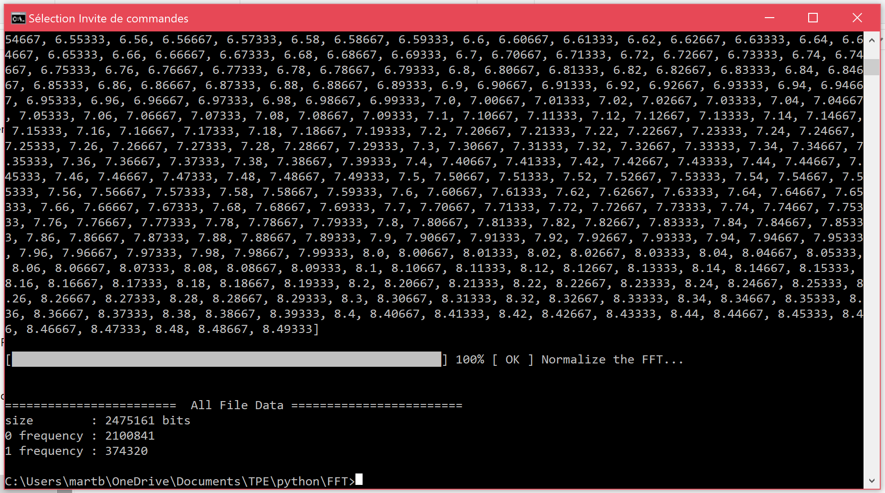
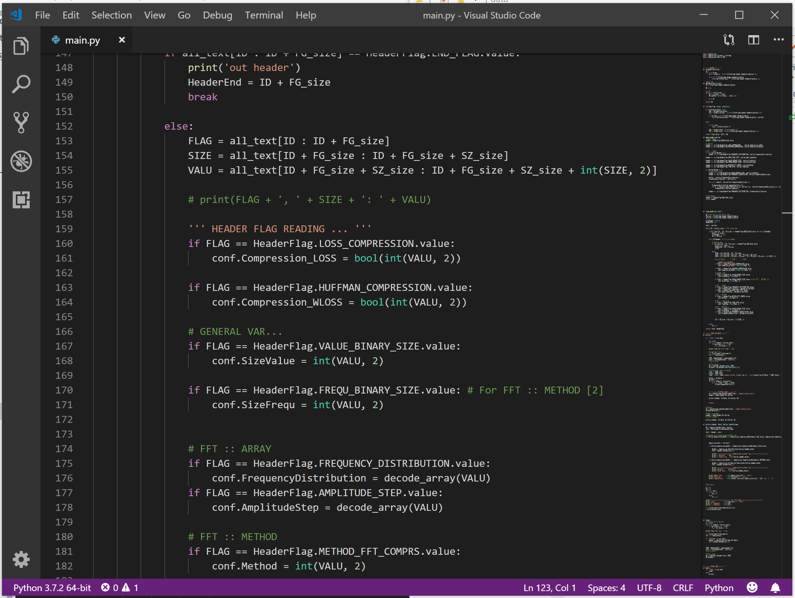

Dans le calcul de la transformation, on calcule autant de fréquences d'enroulement f que de points de données composant le signal d'origine. Etant donné que l'on calcule pour chaque fréquence d'enroulement les positions sur le plan complexe de tous les points d'enregistrement du signal audio pour en faire une moyenne, le nombre d'opérations devient monumental.
Dans ces conditions, la complexité du traitement est de N2 opérations avec N le nombre de samples (points de données du signal). Concrètement si on voulait tester la présence dans un signal des fréquences entre 0 et 20 000 Hz, il faudrait calculer (20 000)2 opérations, soit 400 millions. Avec une opération par minute on prendrait 760 années à tout calculer.
Transformation de Fourier rapide (FFT)
Il existe un moyen d'accélérer la Transformation de Fourier grâce à un algorithme de calcul de la DFT (une certaine manière de calculer la DFT), crée en 1965 par James Cooley et John Tukey: La transformation de Fourier rapide (FFT soit Fast Fourier Transform) crée alors en plein avènement des transistors et des premiers ordinateurs modernes.
Cet algorithme est construit de manière à réduire la quantité d'opérations à Nlog2(N) avec N le nombre de samples. Ceci représente pour une plage de fréquences de 0 à 20 000 Hz seulement 28 600 opérations. Soit un temps de calcul de 198 jours seulement avec une opération par minute.
Application de la FFT
Pour utiliser la FFT nous avons créé un algorithme suivant les principes de l'algorithme de Cooley-Tukey. Cet algorithme est écrit en python, un language de programmation de nombreux logiciels de nos ordinateurs modernes.
Cet algorithme prend en entrée un signal audio enregistré avec un microphone, et donc composé de multiples samples. Ensuite il décompose ce signal en fréquences et crée le spectre de notre enregistrement. Enfin, le programme compile ces informations en un fichier en bits (unité d'information : 0 ou 1).


Programmation de l'expérimentation
Arborescence de notre programme de compression par la FFT

Extrait du code écrit par nos soins.
Le programme possède plusieures paramètres relatifs à la FFT:
Timestep: le nombre d'updates de fréquences par seconde.
Limitderivateinstantanate: un degré de simplification du traitement de l'amplitude des fréquences.
Resultats de compression
Les taux de compression réduisent la taille du fichier sonore jusqu'a 53 fois.
Expérimentations sonores
Rappellons que la compression par la Transformation de Fourier entraine des pertes de qualité. Pour obtenir un son de la qualité d'un MP3, il faudrait traiter le son ulterieurement avec d'autres algorithmes.
Son de piano enregistré puis son compressé
Son de voix robotique, avec peu de tons.
Extrait de musique contemporaine avec des percussions.
On atteint des taux de compression significatifs grâce à la Transformation de Fourier. Cependant il y a une perte notable de qualité et on entend de nombreuses coupures dans le signal.
Ce problème n’est sans doute pas lié à la qualité de notre enregistrement ou de notre compression mais plutôt à une mauvaise restitution du signal audio, un problème de décompression. En effet, pour restituer notre signal audio à partir de la suite de fréquences et amplitudes calculées par la FFT, nous juxtaposons partie après partie la somme des fréquences et des amplitudes du signal. Cela crée des discontinuités entre les parties reconstituées du signal sonore.
Pour corriger ce problème, on pourrait essayer de faire une interpolation linéaire entre des différents paramètres : fréquences et amplitudes au moment de la restitution du signal. Le protocole d’une FFT polyvalente donnant un résultat acceptable comporte de nombreux modules à ajouter en plus de l’étape de la FFT. Une fois ces modules appliqués correctement, la FFT devient non seulement fonctionnelle et correcte, mais en plus extrêmement utile et efficace.
Conclusion et limites
Mieux comprendre une onde sonore complexe grâce à l'analyse de ses fréquences fondamentales est la porte d'entrée vers une compression efficace. La transformation de Fourier est un outil formidable qui permet la compression drastique d'un signal audio. Elle est même le moteur de beaucoup d'applications de technologie et de physique actuelles que ce soit pour la création d'un fichier mp3, pour la compression d'une image en JPEG, voire l'analyse des ondes de probabilités des particules.
Cependant, son application est lente sauf à utiliser la transformation de Fourier rapide, bien plus complexe.